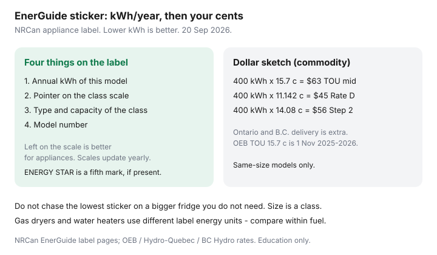

Utilities · Canada
How to Read EnerGuide Labels on Appliances in Canada Before You Buy
Shoppers compare the red sale tag and ignore the black-and-white EnerGuide hang-tag that will still be on the Visa in year eight. For appliances, the big number is kWh per year under a test cycle — consumption, not an efficiency percent. Lower is better. The pointer only means something inside the same type and capacity class.
This is the product label, not the house rating. The home evaluation is a different EnerGuide: what a blower-door visit includes. Convert fuels and ¢ in useful-heat math if the appliance is a dryer or water heater on the heating bill.
Disclosure: LED kits and home energy monitors are offer types. Saving Optimizer may earn a commission if we later add partner links. We do not currently claim retailer, NRCan, or utility partnerships. This is education — not a product rating or rebate approval.
Key takeaways
- NRCan’s appliance label shows four things: annual kWh, a pointer on the class scale, the type and capacity that define the class, and the model number. ENERGY STAR, if present, is an extra mark — not a substitute for kWh/year.
- For appliances, lower kWh is better and further left on the scale is better. For many heating and cooling products, the rating is an efficiency number and higher / further right is better. Do not mix the two habits.
- Compare same-size, same-defrost, same-configuration fridges — not a 14 cu. ft. against a French-door 25.
- Dollars ≈ kWh/year × your all-in ¢. Sketch using OEB TOU mid-peak 15.7 ¢ (1 Nov 2025–31 Oct 2026), Hydro-Québec Rate D second tier 11.142 ¢ (1 Apr 2026), or BC Hydro Step 2 14.08 ¢ — plus delivery where it applies.
- A larger “efficient” unit can still use more kWh than a smaller ordinary one. Buy the size you will fill, then the left-side pointer.
What the kWh/year number means on fridges, washers, and more
NRCan’s “reading the label” page (used 20 Sep 2026) is the method. The large number is estimated annual electricity use in kilowatt-hours under a standardized test — not your leftover-packed fridge, not a cold garage, not 14-minute showers. It lets models compete. It does not invoice your LDC.
The scale is the range of similar models sold in Canada. Labelling scales for appliances are released annually (NRCan: January for appliances, March for room air conditioners). A pointer outside the bar can appear when a new model lands after the scale was printed. Check type and capacity printed on the label so you are not comparing a compact fridge to a side-by-side.

Comparing similar-size models — not chasing the lowest sticker blindly
A 280 kWh compact and a 480 kWh family fridge can both sit “left of centre” in their own classes. The family fridge still uses more electricity. Choose capacity from how you shop (and whether the garage fridge is a second always-on load), then pick the better kWh inside that class.
You may see a Canadian EnerGuide tag and a U.S. yellow EnergyGuide on the same hang-tag. Test methods are often similar; the scale can differ because the model mix differs. Use the Canadian kWh and the Canadian class for a Canadian bill.
Electric vs gas dryers and water heaters on labels
| Product | What the Canadian label is doing | Shopping rule |
|---|---|---|
| Fridge, freezer, washer, dishwasher, electric dryer | kWh/year; lower is better | Same configuration and size; then the left-side pointer |
| Gas dryer / gas range | Different or limited labelling (gas ranges: EnerGuide is not mandatory) | Compare gas to gas. A “cheap electric dryer” on Rate D second tier is a winter habit, not a bargain |
| Water heaters | Electric models in kWh-style energy use; gas models in a fuel-energy figure | Pick the fuel you already have, then efficiency. A fuel switch is a venting and panel project |
| Room A/C / some heating equipment | Often an efficiency metric — higher can be better | Read the product-type instructions on the NRCan page; do not reuse the fridge habit |
Translating kWh into dollars using your utility rate
Commodity sketch for 400 kWh/year (a modern fridge-class ballpark, not a rating):
- Ontario TOU mid-peak 15.7 ¢ (1 Nov 2025–31 Oct 2026) → about $63 commodity. Off-peak 9.8 ¢ is about $39; on-peak 20.3 ¢ is about $81. Always-on loads mix all three. Delivery and the 23.5% OER sit on top / beside that.
- Hydro-Québec Rate D second tier 11.142 ¢ (1 Apr 2026) → about $45. A house already over 40 kWh/day in January lives here.
- BC Hydro Step 2 14.08 ¢ → about $56 energy, plus the daily basic charge. Step 1 11.87 ¢ is about $47 if you still have room in the step.
A 200 kWh/year gap between two same-size fridges is about $20–$40 a year at those commodity ¢ — real money over a 12-year life, rarely enough to justify a $400 price jump by itself. Combine it with the sale price and whether you are retiring a 1998 unit that was never labelled this way.
When a larger efficient unit still costs more to run
French-door, through-the-door ice, and a second freezer drawer add kWh even when the pointer looks “good” for that luxury class. A 25 cu. ft. ENERGY STAR can beat its 25 cu. ft. peers and still lose to an 18 cu. ft. ordinary fridge. Buy the box you will fill. An empty extra fridge in the basement is a dedicated space heater that makes leftovers.
Washers: kWh/year assumes a test cycle. Your hot-water washer on an electric tank is also a water-heater bill. Cold wash is the Canadian habit that the sticker cannot force.
Recycling old appliances and utility pick-up programs
The win is often retiring the second fridge, not buying a slightly better first fridge. Utilities and provinces run pick-up / recycling offers that open and close (Save on Energy, BC Hydro fridge take-back, municipal hazardous-waste days). Confirm the live bounty and whether the appliance must still power on. Do not pay a junk guy to dump a refrigerant appliance in a ravine.
LEDs in the same store aisle are a faster kWh cut than a range upgrade. If a recessed can is still halogen, you are heating the attic on purpose — upgrade order.
Sources & date stamps
- NRCan, Reading the EnerGuide label — four appliance fields; lower kWh better; left on the scale better; compare type and capacity (used 20 Sep 2026).
- NRCan, EnerGuide label for appliances and room air conditioners — annual scale updates (January appliances, March room A/C).
- OEB RPP 1 Nov 2025–31 Oct 2026 — TOU 9.8 / 15.7 / 20.3 ¢; 23.5% OER.
- Hydro-Québec Rate D 1 Apr 2026 — 11.142 ¢ second tier; BC Hydro residential Step 1 / Step 2 11.87 / 14.08 ¢ (as used on this site’s BC Hydro guide).
Frequently asked questions
Is a lower EnerGuide number always more efficient?
For appliances, lower kWh/year means lower tested consumption. It is not a percentage efficiency. Compare inside the same class.
Why is the U.S. yellow label different?
Canada and the U.S. often use similar tests; the scale can differ because the mix of models differs. Use the Canadian kWh for a Canadian bill.
How do I turn kWh into dollars?
Multiply kWh/year by your all-in ¢ (commodity plus, in most provinces, a delivery share). The article’s 15.7 ¢ / 11.142 ¢ / 14.08 ¢ sketches are commodity illustrations.
Should I replace a working fridge to save energy?
Only if it is old, loud, and you will recycle it — or you are killing a second garage fridge. A $1,400 new box for a $30/year delta is a kitchen project, not a utility project.
Do gas dryers have the same kWh sticker?
Not in the same way. Compare gas to gas and electric to electric. A fuel switch is venting, gas line, or panel work.